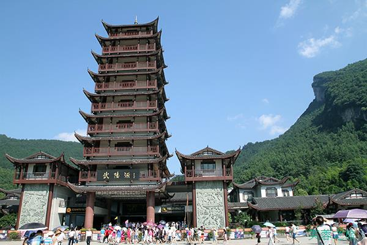
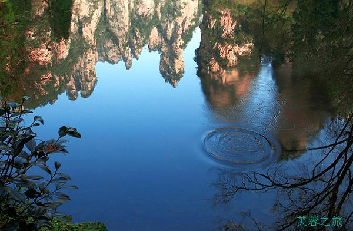
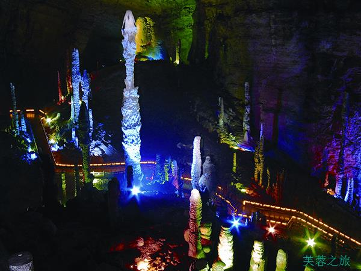

一、概述
走进武陵源
武陵源风景名胜区位于湖南省西北部，为国家级著名旅游风景区，由张家界、索溪峪、天子山、杨家界四大部分组成。 武陵源属世界上罕见的砂岩峰林地貌，这里的风景没有经过任何的人工雕凿，到处是石柱石峰、断崖绝壁、古树名木、云气烟雾、流泉飞瀑、珍禽异兽。置身其间，犹如到了一个神奇的世界和趣味天成的艺术山水长廊。有“大自然迷宫”、“天下第一奇山”之美誉。 武陵源以奇峰、怪石、幽谷、秀水、溶洞闻名于世，五千座石峰千姿百态，耸立在沟壑深幽之中；八百条溪流蜿蜒曲折，穿行于石林峡谷之间。无论是在黄石寨揽胜、金鞭溪探幽，还是在神堂湾历险、十里画廊拾趣，或是在西海观云、砂刀沟赏景，都令人有美不胜收的陶醉，发出如诗如画的赞叹。 主要景观： 张家界 又名青岩山，是中国第一个国家森林公园，它地处武陵山中。地貌奇特，形态各异，树木茂盛。有黄狮寨、金鞭溪、腰子寨、琵琶溪、砂刀沟、后花园、朝天观七条主要旅游线。 天子山 风景区位于武陵源北，与张家界、索溪峪山水相依。 索溪峪 风景区内有2000多座山峰，还有19道沟壑和6条溪流。主要景点有十里画廊、鸳鸯瀑、南天门、黄龙洞等。 杨家界风景区 这一新景区总面积3400公顷，相传，北宋杨家将围剿向王天子曾在天子山安营扎寨。
到达与离开：武陵源风景名胜区位于中国湖南省西北部,交通比较方便,有很多巴士,旅游车都可到达。 1、飞机 武陵源最近的飞机场为张家界荷花机场,机场有发往市区的大巴,约5公里。 2、火车 坐火车可到达张家界火车站,在火车南站,有前往景区的大巴,约40分钟。 3、汽车 乘汽车可前往长沙,然后在长沙汽车西站和汽车东站均可转车到达张家界。也可以直接到达张家界中心汽车站,出战后,坐前往景区的大巴。 4、自驾 自驾车不可以进入景区,需转乘景区环保车入内。一般停在张家界森林公园门票站外面,或武陵源门票站外面。
景区类型：自然保护区
最佳季节：4月和10月。 春天，芳草茵茵，溯金鞭溪，游十里画廊，探黄龙洞，可以体会武陵人进入桃花源的惊喜； 秋天，层林尽染，正是猕猴桃、蜜橘等水果成熟的时节。 相对而言，夏季高温多雨，冬季气候寒冷，舒适度稍逊于春秋。
建议游玩：2-3天
门票：指纹通票：248.00元（3日内多次有效，含3元保险费及环保观光车费） 周票：298.00元（一周内多次有效） Tips：武陵源核心景区包括张家界国家森林公园、索溪峪自然保护区、天子山自然保护区、杨家界四大景区，凭248.00元的通票均可游览。
开放时间：全年开放 每日06:30~18:30
地址：张家界市武陵源区境内
二、美食
▶吃什么：
武陵源美食：
武林源景区附近有许多出名的湘菜菜馆，你能在这里品尝到湘菜的美味。
华南湍蛙
华南湍蛙，又名石蛙。华南湍蛙平常生活在溪流石潭中，无论白天或黑夜，都能发出“梆梆”的叫声，故俗名“梆梆”。华南湍蛙的肉十分细嫩鲜美，尤其烧汤，比鸡汤还香甜。
岩耳炖土鸡
这锅鲜美鸡汤能够治愈一天旅程的疲惫哦。用岩耳炖土鸡口感很特别，稍稍松散，既滋补又美味。
石锅鱼（金福鱼）
这是湘菜中的一道名菜。浓郁的香辣交织着鱼肉的细甜，感觉特别过瘾，入口的香味经久不散。尝一口滑嫩的鱼汤，要多鲜嫩有多鲜嫩。
▶去哪儿吃：
乐口福酒店人均￥46.00
在八戒青年旅社隔壁，店开了有2家，店面不小，极具人气。餐厅很干净，出菜很快；菜量大，味道好，价格实惠。锅巴盖肉里面的锅巴很脆，甜甜的让你吃了一口又一口。
地址：大庸府城食街(近汽车站)
电话：0744-6127989
唐师傅人均￥61.5
特色菜：手撕包菜,干锅豆腐,三下锅
导游什么的都会推荐这家，算是武陵源那里环境比较好的一家餐馆，菜品味道还可以，口味挺重，就是可能油大了点，服务挺好，菜量挺大。
地址：武陵大道(亘立酒店对面)
电话：(0744)5557779
稻花香饭庄人均￥40.00
离门票站很近，菜的口味很不错，石锅鱼里面的鱼是野生的茅岩河的鱼，鱼肉质鲜嫩，一点土腥味都么有，比清江鱼还好吃，非常有筋道，汤也不错。老板人很热情。
地址：武陵源区未央路8号(近武陵源长途汽车站)
三、景点
走进张家界国家森林公园
张家界国家森林公园是中国第一个国家级森林公园，距张家界市区32公里，东连索溪峪，北邻天子山，面积130平方公里 集神奇、钟秀、雄浑、原始、清新于一体，以岩称奇。园内连绵重叠着数以千计的石峰，奇峰陡峭嵯峨，千姿百态，或孤峰独秀，或群峰相依，造型完美，形神兼备。 张家界国家森林公园主要景观有金鞭溪、黄石寨、腰子寨、琵琶溪、砂刀沟、后花园、朝天观等七条旅游线，它们将您带到一个个美妙的仙境佳地。公园景区森林覆盖率达98%，木本植物93科517种，比整个欧洲所有的木本植物种数多一倍以上，其中属国家一级保护的珍稀树种有珙桐、银杏、香果树、鹅掌楸等7种，珙桐、银杏就有“活化石”之称。这里鸟类有41种，兽类有28种，其中属国家保护的珍稀动物有红嘴相思鸟、长尾雉、水獭、猕猴、麝、貉等，被誉为“天然动物园”。公园四季如春，山花烂漫，境内还有罕见的“龙虾花”，高大的山荷花，名贵的兰花，稀有的紫色杜鹃和地雷花，以及漫山的百合花、樱花、株栗花、长杜鹃等，俨然一个天然的百花园。
到达与离开：离张家界市区32公里左右，从张家界火车站旁的新汽车站有直达的专线。
景点类型：公园
最佳季节：3-5月。9-11月。张家界森林公园的最佳旅游时间是春秋两季：春天的张家界芳草鲜美、落英缤纷，溯金鞭溪，游十里画廊，探黄龙洞，体会武陵人进入桃花源的惊喜；秋天的张家界天高云淡，层林尽染，此时正是猕猴桃、蜜橘等美味水果成熟的时节。相对而言，夏季高温多雨，冬季气候寒冷，舒适度稍逊于春秋。
建议游玩：1-2天
门票：248.00元
开放时间：07:00~18:00
地址： 湖南省张家界市
电话：0744-5718811/8380193

黄龙洞
位于湖南省张家界市核心景区武陵源风景名胜区内，距离张家界市城区30多公里。因享有“世界溶洞奇观”“世界溶洞全能冠军”“中国最美旅游溶洞”等顶级荣誉而名震全球。 黄龙洞规模之大、内容之全、景色之美，全球罕见。现已探明洞底总面积10万平方米；洞体共分四层，洞中有洞、洞中有山、山中有洞、洞中有河。 黄龙洞景区的标志景点是“定海神针”，高达19.2米，两端粗，中间细，最细处直径只有10厘米。据推算已生长了二十万年。 黄龙洞属石灰岩地下河侵蚀型洞穴。钙质石积物五颜六色，绚丽多姿。石乳、石柱、石笋等如水晶玉石，琳琅满目。黄龙洞以其庞大的立体结构洞穴空间、丰富的溶洞景观、水陆兼备的游览观光线路独步天下，内中有天然空调。
景点类型：其他
最佳季节：3-11月。春夏秋三季最佳，春天的的张家界“芳草鲜美、落英缤纷”，探黄龙洞，不难体会武陵人进入桃花源的惊喜；夏天洞内水量丰富，并且可以避暑；秋天的张家界天高云淡，层林尽染；由于黄龙洞内的气温比外面要低一点，所以建议不要在非常寒冷的季节去。
建议游玩：2-3小时
开放时间：旺季：07:30~17:30， 淡季：08:00~17:00
地址：张家界市武陵源区张清公路
电话：0744-5618489

走进宝峰湖
世界自然遗产宝峰湖，地处张家界武陵源风景名胜区的核心地带，距武陵源区政府1.5公里。被称为“世界湖泊经典”。 宝峰湖风景区集山水于一体，融民俗风情于一身，尤以奇秀的高峡平湖绝景、“飞流直下三千尺”的宝峰飞瀑、神秘的深山古寺闻名。宝峰湖主要景点由宝峰湖和鹰窝寨两大块组成。其中宝峰湖、奇峰飞瀑、鹰窝寨、一线天被称为武陵源“四绝”。 宝峰湖以其秀丽的湖光水色与幽野的洞天情趣成为武陵源水景风光的代表之作,电视剧《西游记》中花果山水帘洞外景就拍摄于“奇峰飞瀑”。著名的鹰窝寨位于宝峰湖西南一绝壁之上。早年是著名的土匪寨子,电视剧《乌龙山剿匪记》就拍摄于此。 宝峰湖是一座罕见的高峡平湖，四面青山，一泓碧水，风光旖旎，是山水风景杰作。在湖中漫游，还可以见到湖心岛上的一些佳景，如“仙女照镜”、“高峡平湖”、“金蟾含月” 也各有特色。宝峰湖曾作为2001年张家界国际森林保护节文艺表演的天然布景,在中央电视台、湖南电视台多次亮相,骤然间成为海内外游人心中胜景。每年农历三月中旬的对歌节，当地青年男女对唱山歌表达彼此爱慕之情。
景点类型：湖泊
最佳季节：4月-5月和8月-9月最佳。 宝峰湖景区湖光山色，景区气候较好，温度适宜，非常适合游览。 相对而言，夏季高温多雨，冬季气候寒冷，舒适度稍逊于春秋。
建议游玩：2-3小时
门票：96.00元
开放时间：旺季（4月1日~10月31日）：07:00~18:00 淡季（11月1日-3月31日）：07:30~17:00
地址： 张家界市武陵源区索溪镇
电话：0744-5629888
四、交通
武陵源交通
武陵源风景名胜区位于中国湖南省西北部,交通比较方便,有很多巴士,旅游车都可到达。
【飞机】
武陵源最近的飞机场为张家界荷花机场,机场有发往市区的大巴,约5公里。
【火车】
坐火车可到达张家界火车站,在火车南站,有前往景区的大巴,约40分钟。
【汽车】
乘汽车可前往长沙,然后在长沙汽车西站和汽车东站均可转车到达张家界。也可以直接到达张家界中心汽车站,出战后,坐前往景区的大巴。
【自驾】
自驾车不可以进入景区,需转乘景区环保车入内。一般停在张家界森林公园门票站外面,或武陵源门票站外面。
五、热门酒店
京武铂尔曼
地址：位于张家界武陵源区画卷路，毗邻森林公园。
电话：(0744)8888888
青和锦江
距武陵源门票站步行仅15分钟，车行3分钟。网友评价说“位置不错，房间不错，性价比高，服务很好，早餐很丰富”。
地址：坐落于武陵源核心景区，
电话：(0744)8188888
圣多明歌
位置，设施，卫生总体都很不错，服务很热情，重点说一下咨询服务。酒店内可以代购门票，省去了不少麻烦。即使不在酒店购买景区门票，酒店相关人员也会提供耐心详细的咨询服务。
电话：(0744)5996888
马桑树客栈
是武陵源区第一家以民族音乐为主题，餐饮、购物、娱乐、休闲为一体的全新特色客栈。
地址：位于军地坪吴家峪办事处附酒店电话
电话：0744-5906666
六、文化地理
武陵源文化地理
历史
武陵源，古已有之。历史上分属不同的行政区管辖。1984年，时任中共中央总书记的胡耀邦视察此地时将张家界、索溪峪、天子山三大景区命名为“武陵源”。因此，又称张家界核心景区为武陵源风景名胜区。1988 年，国务院确定武陵源为国家重点风景名胜区，并批准设立武陵源县级行政区。总面积 397 平方公里，辖六个乡镇处，人口 4.4 万，有汉族、土家族、苗族、白族等多个民族。
1988年5月经国务院批准成立的县级行政区，张家界市的核心景区就在武陵源区境内。武陵源，史书上称为“禹甸之灵境”、“赤县之奥区”，因其山奇水异，谷深道险，洞幽林密，鸟语花香，自古神秘莫测。这里融峰、林、洞、瀑于一地，集秀、幽、野、险于一身。故唐代诗人王维留下了“居人共住武陵源，还从物外起田园”的诗句。
文学
文人画家笔下的“武陵源”，常德旧称武陵郡。秦以前，现时的张家界风景区属黔中地，自汉以来归武陵郡管辖。而在文人墨客笔下，“武陵源”更是大有来头。盛唐著名诗人王维，19岁时以陶渊明的《桃花源记》为背景，写下了七言乐府《桃源行》，其中就有“居人共住武陵源，还从物外起田园”；李白也写过“功成拂衣去，归入武陵源”。他们都把武陵源比作世外桃源。甚至有人认为，陶渊明所写的“世外桃源”并不在常德的桃源县，而是张家界的武陵源。
气候
武陵源的春、夏、秋、冬，阴、晴、朝、暮，气候万千。云雾是武陵源最多见的气象奇观，有云雾、云海、云涛、云瀑和云彩五种形态。雨后初霁，先是膘胧大雾，继而化为白云，缥缈沉浮，群峰在无边无际的云海中时隐时现，如蓬莱仙岛，玉宇琼楼，置身其间，飘飘欲仙，有时云海涨过峰顶，然后以铺天盖地之势，飞滚直泻，化为云瀑。